Shyft & Mindhouse
How we helped two sister brands as a support design team
M-01
+2x
Increase in time spent on site by people landing on new landing pages
M-02
+116%
Increase in time spent on site by people landing on new landing pages
M-03
3x
Increase in revenue
M-04
+129%
Increase in time spent on site by people landing on new landing pages
- Status
- Finished
- Deliverables
- Design System, Landing Pages, App Redesign
- Duration
- 8 months
- Year
- 2023
- Project scope
- UI Design
- Design System
- Research
We worked with two sister brands, Shyft and Mindhouse, over the period of 8 months as a support design team. Over the course of this time we worked on a variety of projects.
THE BRIEF
We worked with two sister brands, Shyft and Mindhouse, over the period of 8 months as a support design team. Over the course of this time we worked on a variety of projects.
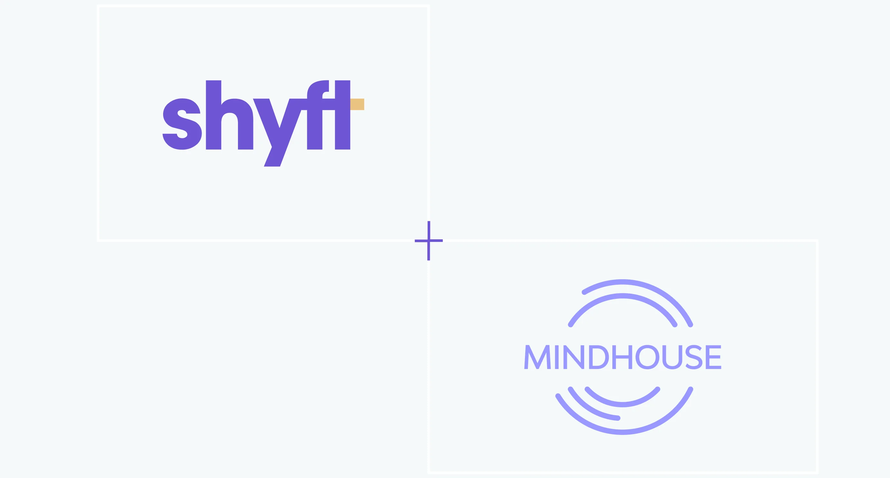
Shyft Design System
We thoroughly audited the existing design components in Shyft’s mobile app design system. We were able to identify significant redundancy and streamline the design system. This greatly reduced the design debt and enabled the team to move faster.
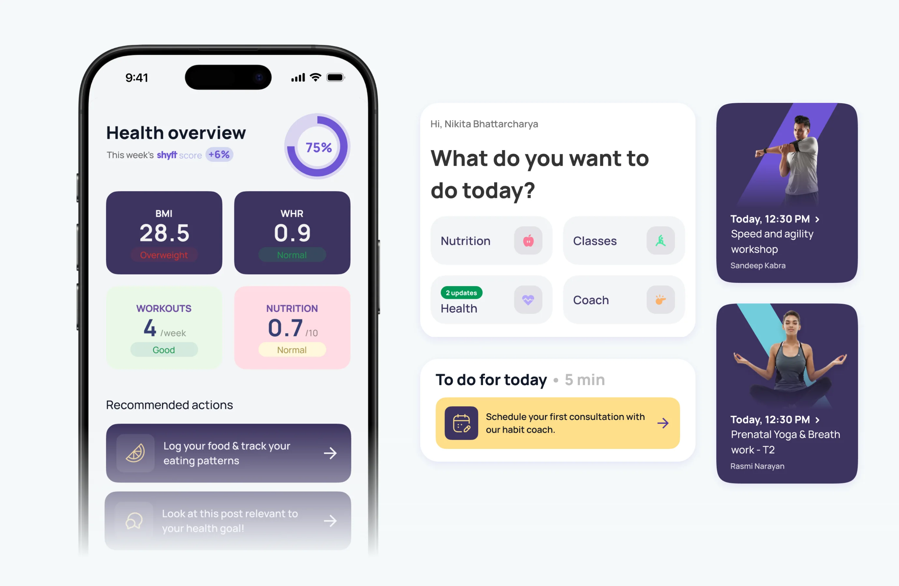
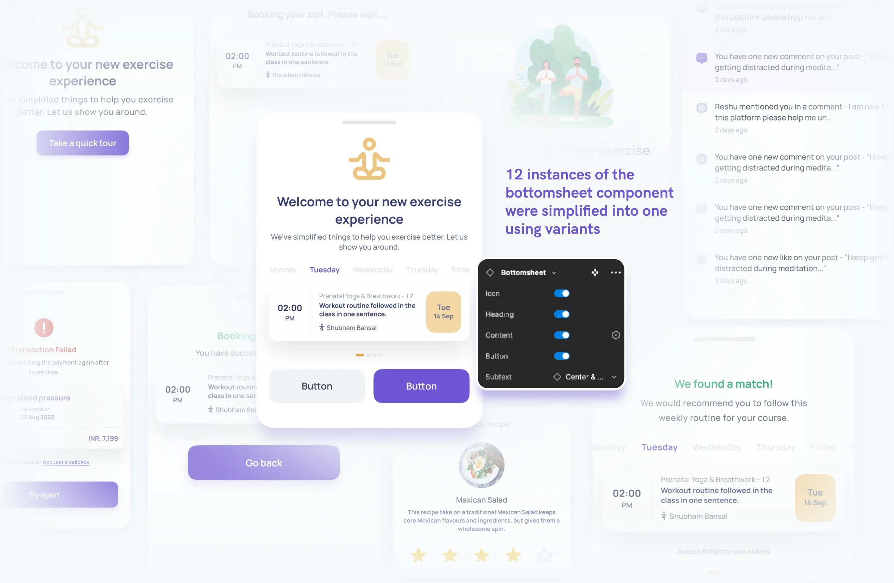
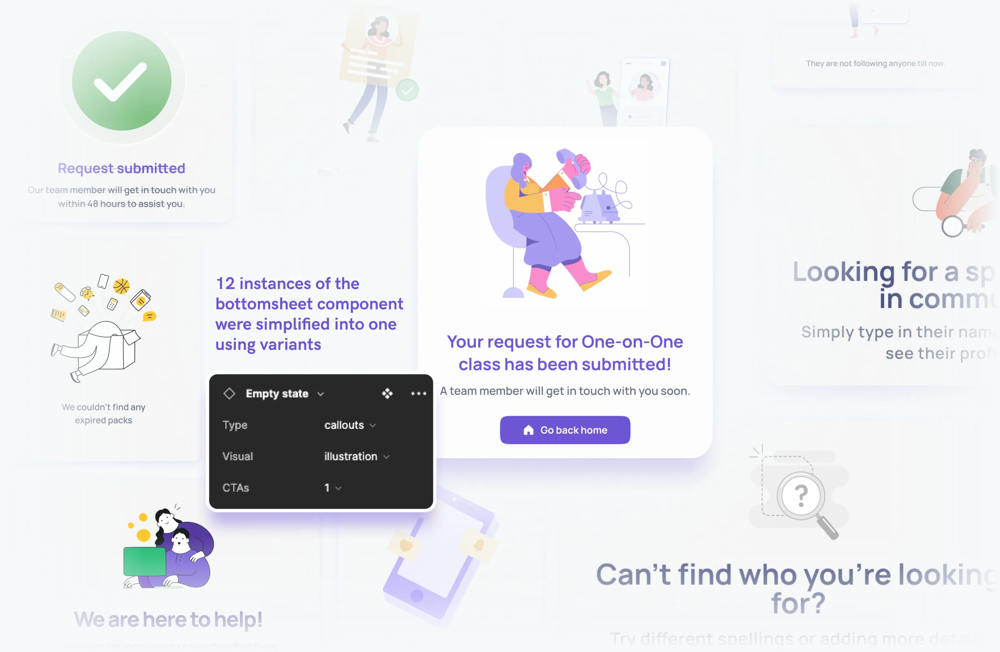
Designing for Conversion
Shyft ran ads about their bootcamps, and we helped them supercharge their conversions. We designed a dynamic landing page template that helped streamline their deployment time and enabled visitors to discover what resonated with them.
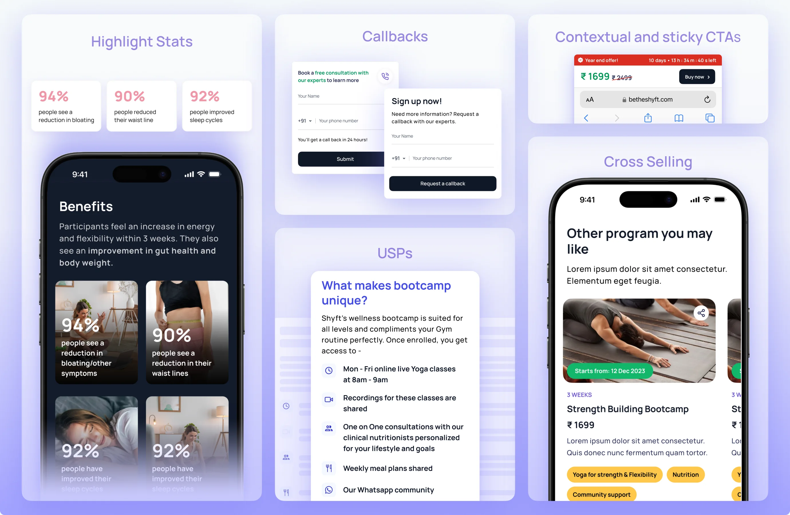
Designing for Shyft Pass
Enhanced the Shyft Pass landing page by elevating the brand’s appeal and incorporating micro-interactions for increased engagement, effectively drawing visitors in.
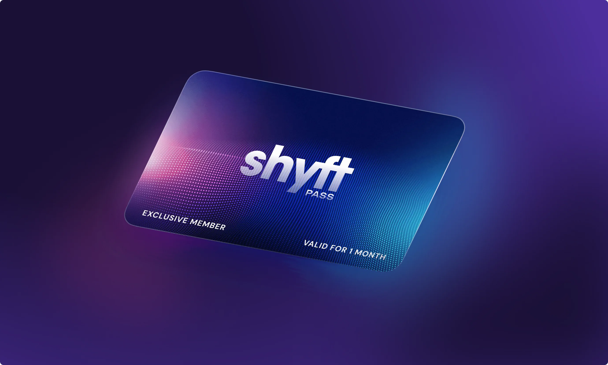
Revamp UI to elevate brand
The brand wanted to move into a more modern and active lifestyle based space
Improve pricing strategy
Surfacing pricing plans in a structure that makes it easy for the user to understand and transact
Storytelling to drive conversions
Reworked the content on the Shyftpass with the Sales team to boost conversions
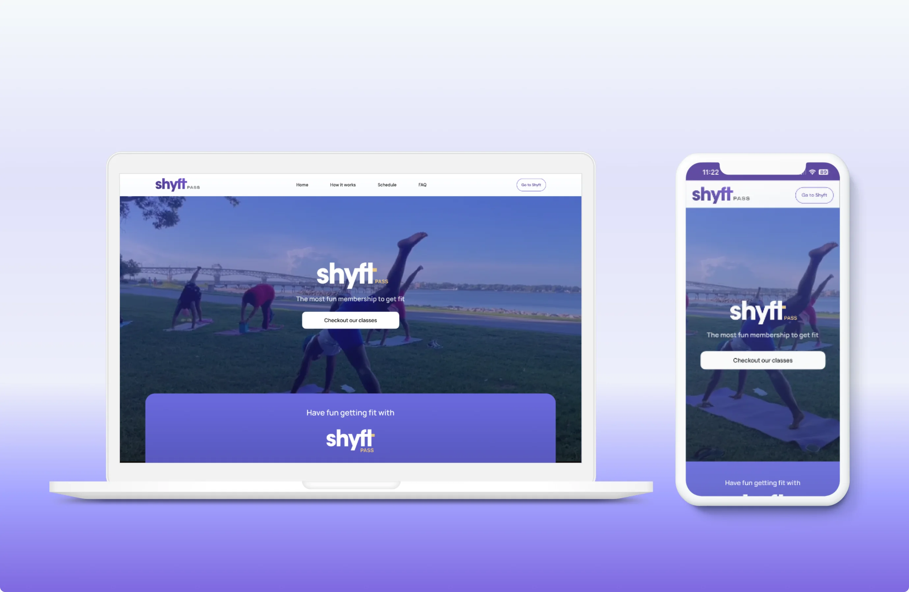
Redesigned the Onboarding
As Mindhouse added new verticals, the onboarding needed to introduce its features and gather user details to personalise the experience. We redesigned the flow end-to-end to reflect the platform’s expanded offering.
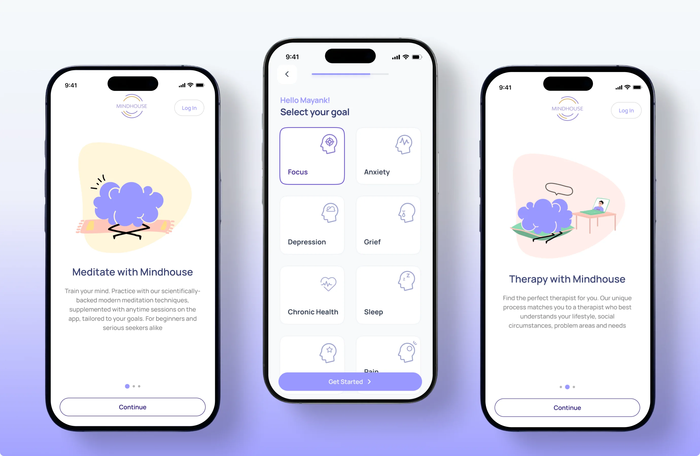
Designed the Therapy Flow
Mindhouse operates within the mental health sphere, providing users with recorded mindfulness content and access to mental health communities.
On recognising the need to further enrich their offerings, they strategically introduced Therapy. This addition expanded their services but came with the need of seamless therapy experience for the end users.
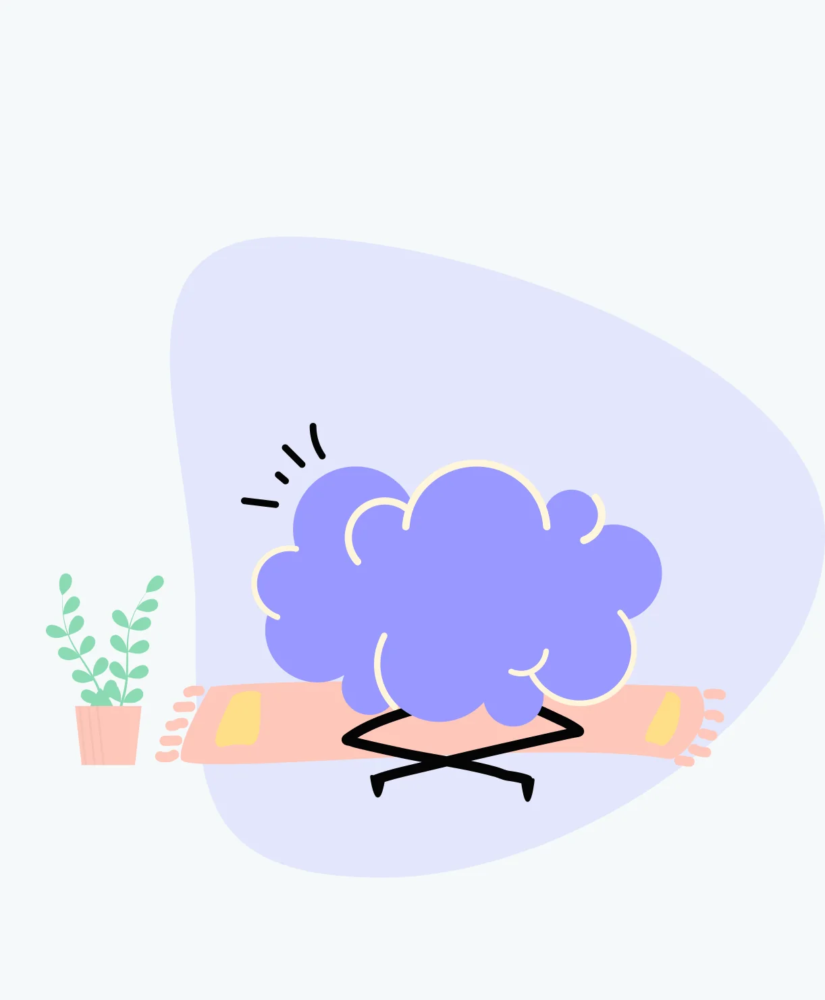
Challenges in the therapy landscape
Lack of awareness and stigma associated with therapy
Despite the recent surge in mental health awareness, we observed reluctance among people to seek professional help for their mental well-being
Not finding the right therapist and associated fatigue
Another significant hurdle, once people overcome their stigma of therapy, is finding the right therapist. Oftentimes people cycle through multiple therapists before discovering the right fit and can be an exhausting process, which leads to abandoning therapy altogether
Cost Factor
The general perception is that therapy comes with a heft price tag, deterring many from seeking help when needed. This cost barrier often prevents individuals from getting therapy.
Designing to overcome the challenges
Dedicated feature sections accommodate the platform’s expanded offerings — from mindfulness and community to therapy — giving each vertical the prominence it deserves on a single, cohesive home screen.
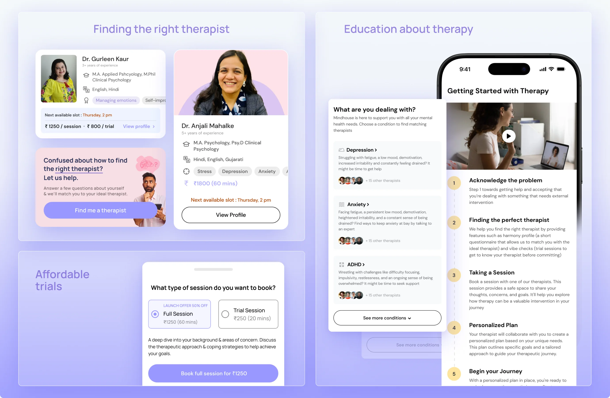
Crafting the UI for the entire therapy flow
Dedicated feature sections accommodate the platform’s expanded offerings — from mindfulness and community to therapy — giving each vertical the prominence it deserves on a single, cohesive home screen.
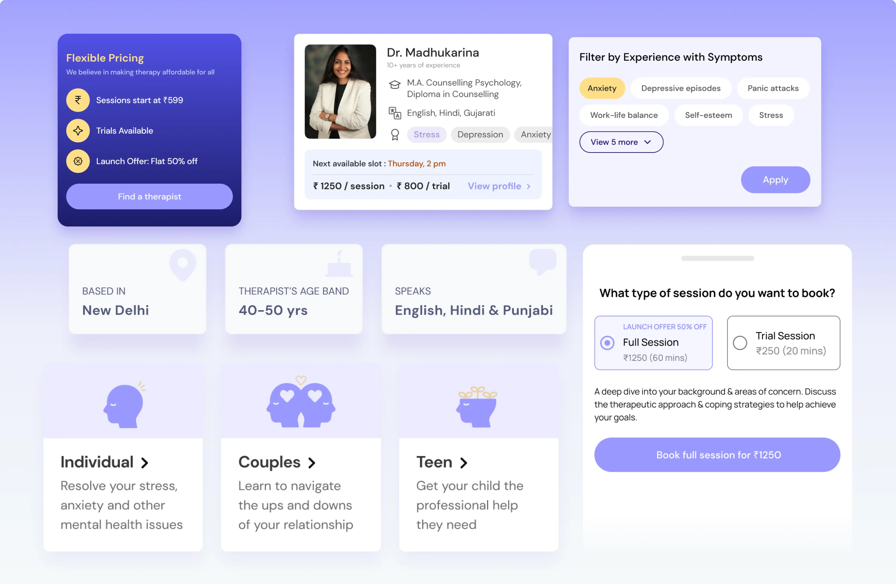
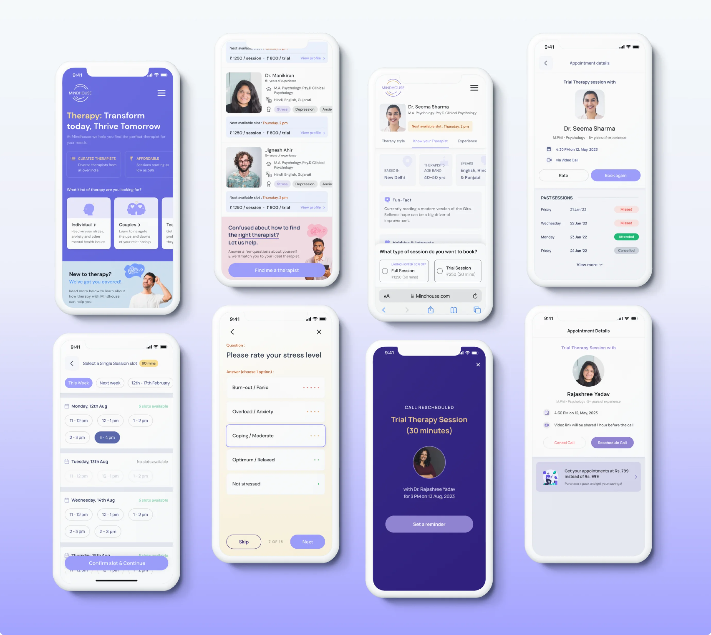
Post launch optimisation
Once the Therapy flow had spent some time in the market, we began to optimize it for conversion. To do so, we looked at data to gather usage insights and used our initial research. We were then able to make iterative changes to impact key metrics.
SM-01
3x
Increase in revenue
SM-02
Improved distribution of leads amongst therapists on the platform
Redesigned the Mindhouse App Homepage
Dedicated feature sections accommodate the platform’s expanded offerings — from mindfulness and community to therapy — giving each vertical the prominence it deserves on a single, cohesive home screen.
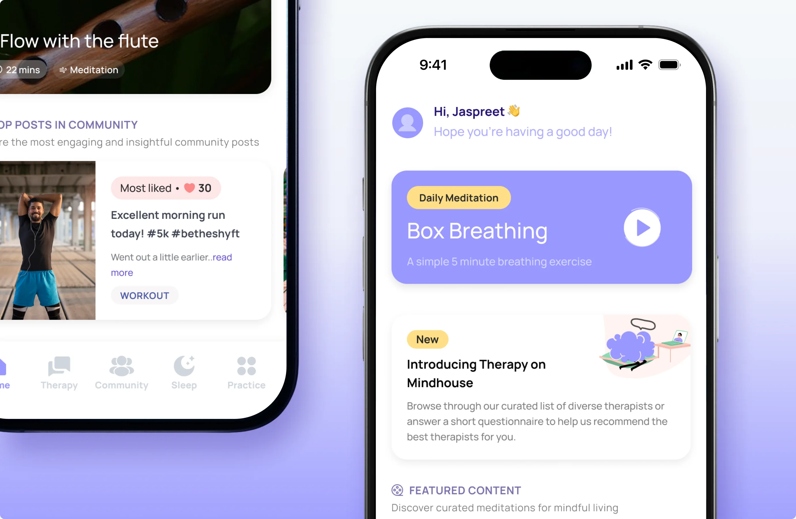
“Absolutely loved working with the team at Tibba Design Studio, would highly recommend hiring them to help turn your company around from a design POV while keeping business objectives at the forefront”